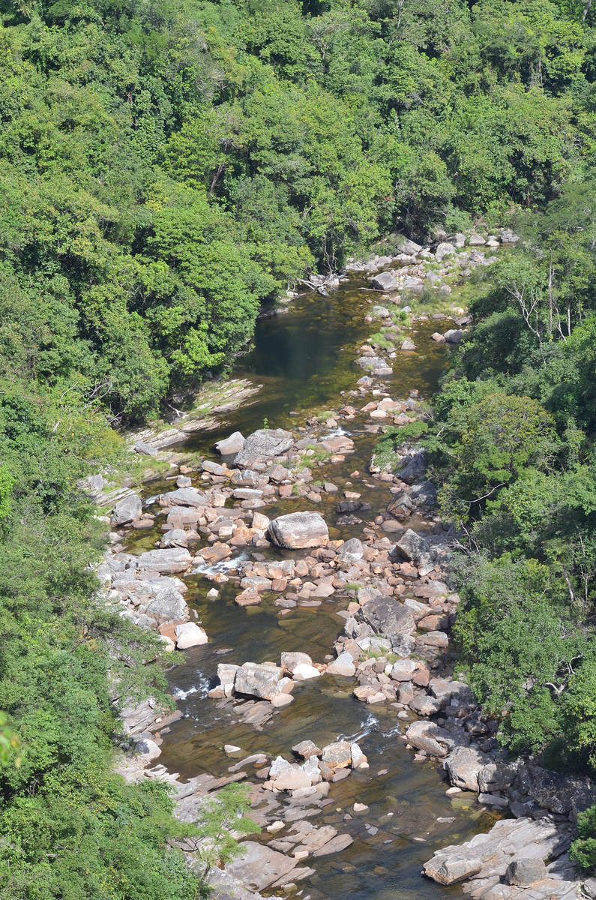
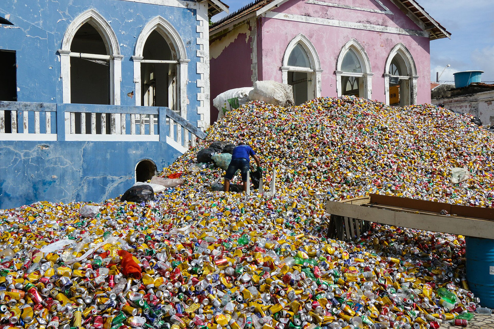
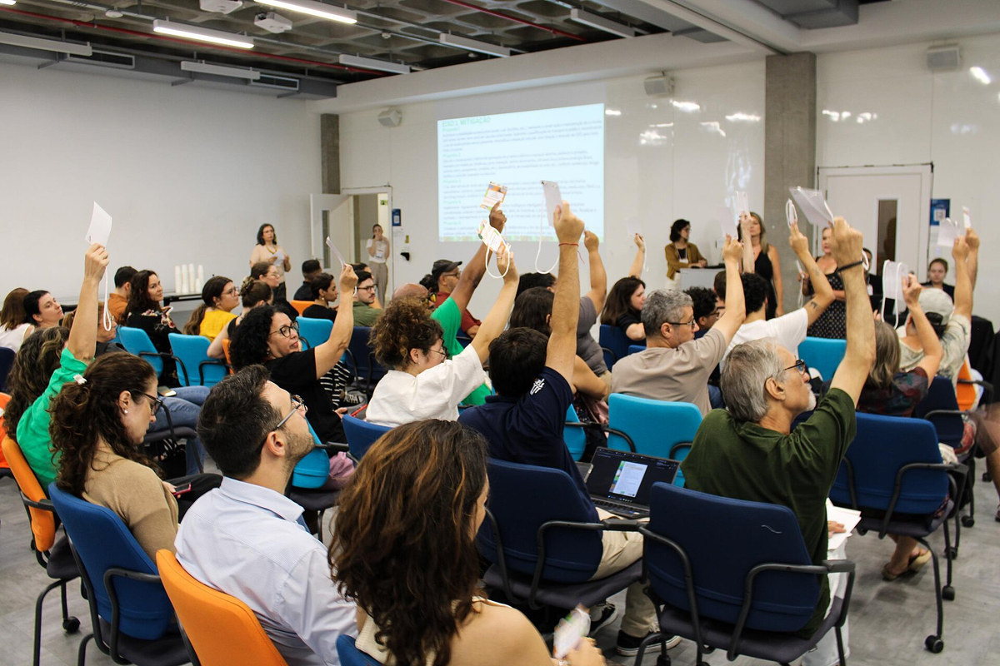
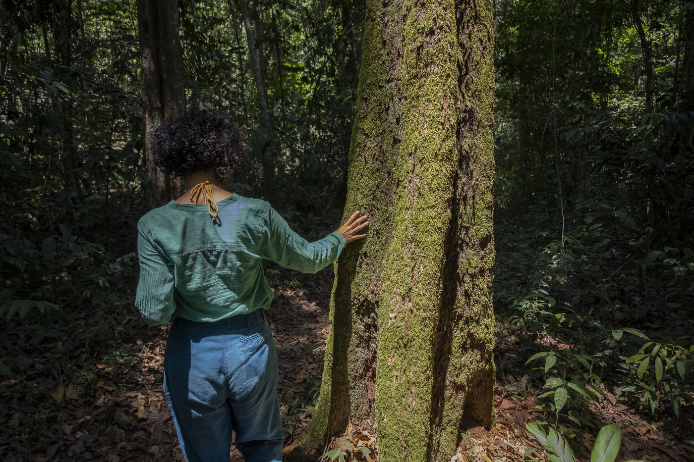
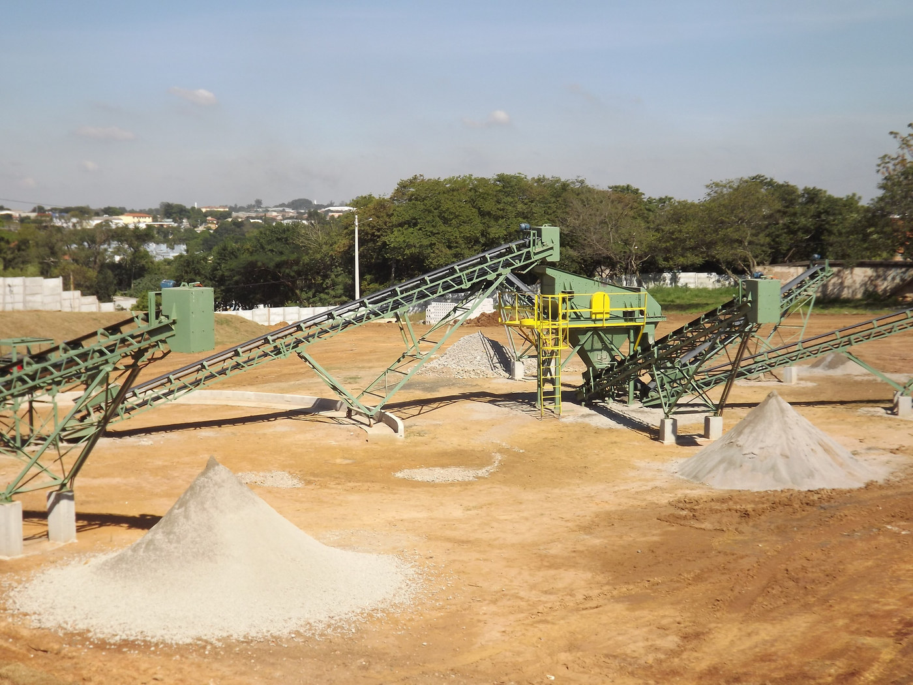
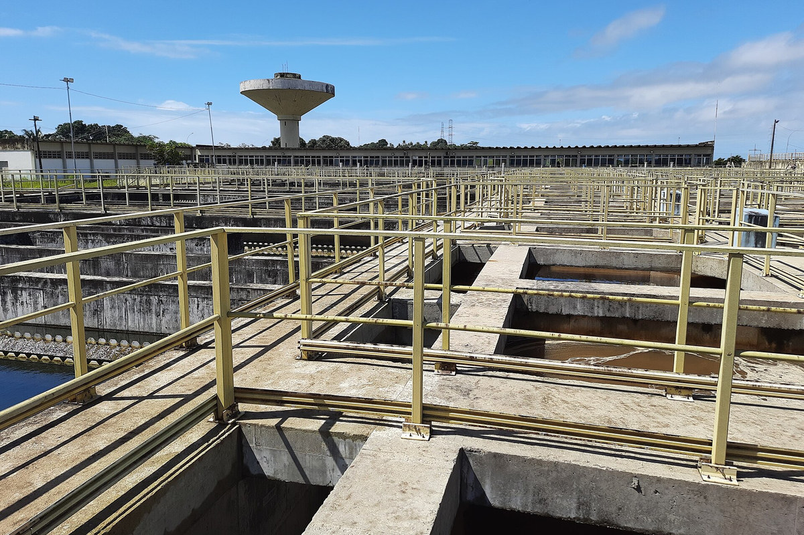
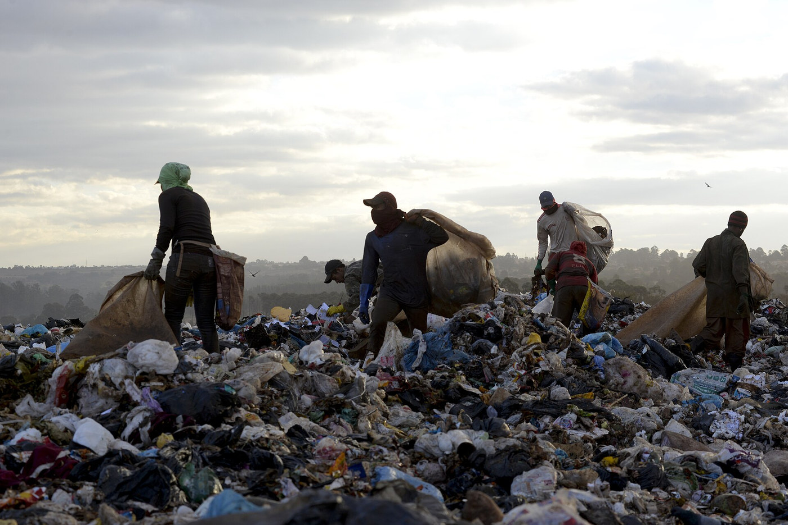

Caio Victor Ferreira do Nascimento · Edson da Silva Lima Junior · Diogo Educação Ambiental · Prof. Davi Lima Pantoja Leite
“Todo projeto de Educação Ambiental busca a mesma transformação?”
Cenário ilustrativo de aventura 2D em pixel art: céu azul-esverdeado, montanhas ao fundo, rio, árvores e plataformas de terra cobertas por grama. Paisagem fictícia.
Paisagem ilustrativa em pixel art
Uma crise ambiental, três respostas educativas
Layrargues e Lima analisam diferentes focos para a Educação Ambiental: natureza, gestão e relações sociais.

preservarnatureza e afeto (pauta verde)

gerirresíduos e consumo (pauta marrom)

transformarsociedade, conflito e cidadania
Fontes: LAYRARGUES & LIMA (2014, p. 30–31, 33); PELICIONI & PHILIPPI JR. (2014, p. 4, 7–8). Fotos: Elci Guerra Junior (CC BY-SA 4.0); Alice Mafra / Prefeitura de Olinda (CC BY 2.0); Sérgio Louruz / SMAMUS / PMPA (Attribution). Todas via Wikimedia Commons.
Educação Ambiental: contexto histórico
1977
Tbilisi Princípios e interdisciplinaridade.
1981
PNMA EA como alicerce da política ambiental.
1992
Rio-92 Ambiente e desenvolvimento articulados.
1999
PNEA Política e marco regulatório nacional.
Layrargues e Lima destacam a institucionalização pelo sistema ambiental; Santos e Toschi a situam nos anos 1980.
Cenário, não causa: o consumo elétrico indica expansão produtiva; não mede dano ambiental nem explica as vertentes.
Fontes: LAYRARGUES & LIMA (2014, p. 27, 33); SANTOS & TOSCHI (2015, p. 243); PELICIONI & PHILIPPI JR. (2014, p. 5–6); SOUZA (2018, p. 61). Dados: IBGE (2003, tab. 9.3).
Três macrotendências: lentes em disputa, não etapas
Layrargues e Lima propõem três tipos ideais para analisar um campo plural e disputado:
Conservacionista
natureza e preservação (pauta verde)
Pragmática
gestão e ecoeficiência (pauta marrom)
Crítica
justiça e transformação social
Coexistem e disputam sentidos. A tipologia orienta escolhas pedagógicas; uma prática pode combinar elementos de várias lentes.
Fontes: LAYRARGUES & LIMA (2014, p. 24–25, 30–34; 2011, p. 13); SANTOS & TOSCHI (2015, p. 247); PELICIONI & PHILIPPI JR. (2014, p. 7).
Macrotendência Conservacionista: sensibilização e valorização da natureza

Trilha da Vovó Sumaúma, Floresta Nacional do Tapajós (PA). Foto: Leonardo Milano / Amazônia Real — Wikimedia Commons (CC BY 2.0)
Diagnóstico
Degradação da natureza; ser humano sem recorte social.
Estratégia
Sensibilização, vivências e conduta individual.
Contribuição (leitura do grupo)
Vínculo afetivo e relativização do antropocentrismo.
Limite nas fontes
Layrargues e Lima: mudar a cultura exige mudanças econômico-políticas.
“O cuidado individual é suficiente para enfrentar todos os conflitos ambientais?”
Fontes: LAYRARGUES & LIMA (2014, p. 27, 29–30); SANTOS & TOSCHI (2015, p. 244–245); PELICIONI & PHILIPPI JR. (2014, p. 4, 6); BRÜGGER (1994 apud LAYRARGUES & LIMA, 2014, p. 29).
Macrotendência Pragmática: gestão, ecoeficiência e consumo sustentável
Diagnóstico
Resíduos, desperdício e consumo: a “pauta marrom”.
Estratégia
Reciclagem, consumo sustentável e ecoeficiência.
Contribuição (leitura do grupo)
Foco educativo em problemas urbano-industriais.
Limite nas fontes
Layrargues e Lima: compensa o consumismo sem mudar suas bases.
“Reduzir impactos por unidade produzida basta se o volume total continua crescendo?”

Usina de reciclagem, Hortolândia (SP). Foto: Ana Perugini — Wikimedia Commons (CC BY 2.0)
Gráfico: PNUMA/UNEP, Global Resources Outlook 2024, p. 26. Caracterização: LAYRARGUES & LIMA (2014, p. 29–32); SANTOS & TOSCHI (2015, p. 245–247); PELICIONI & PHILIPPI JR. (2014, p. 8).
Macrotendência Crítica: justiça socioambiental e transformação estrutural
Diagnóstico
Crise ecológica ligada a conflitos, poder e desigualdade.
Estratégia
Ação coletiva, cidadania e pedagogia do conflito.
Contribuição (leitura do grupo)
Ecologia articulada às lutas populares.
Limite nas fontes
Santos e Toschi: pouca presença no universo infantil.
Em 2000, a diferença entre Norte e Sudeste era de 54,6 pontos percentuais.
“Se a infraestrutura avança em todas as regiões, a distância entre elas diminui?”

ETA Gramame-Mamuaba, Conde (PB). Foto: Marcos Elias de Oliveira Júnior — Wikimedia Commons (CC0 1.0)
Gráfico: IBGE, Censo 1991/2000, Tab. 56. Caracterização: LAYRARGUES & LIMA (2014, p. 29, 33); SANTOS & TOSCHI (2015, p. 247–248); PELICIONI & PHILIPPI JR. (2014, p. 7–8); SOUZA (2018, p. 63, 67–68).
Quadro comparativo: três leituras político-pedagógicas da crise
Comparação entre as três macrotendências segundo diagnóstico, sujeito da ação e mudança considerada suficiente.
Critério
Conservacionista
Pragmática
Crítica
Diagnóstico
Degradação de ambientes naturais
Resíduos, desperdício e consumo
Desigualdade e acumulação do capital
Quem age
Indivíduo no âmbito privado
Consumidores e empresas
Coletividades populares articuladas
Mudança suficiente
Sensibilização afetiva e conduta individual
Reformas setoriais e ecoeficiência
Transformação social e superação de injustiças
Síntese: LAYRARGUES & LIMA (2014, p. 25, 27, 29–34); SANTOS & TOSCHI (2015, p. 248–249); PELICIONI & PHILIPPI JR. (2014, p. 4, 7–8); SOUZA (2018, p. 63, 67). Tipos ideais que coexistem, sem hierarquia moral ou etapas.
Estudo de caso: o fechamento do Lixão da Estrutural (DF)
Preservação: depósito por quase seis décadas, vizinho ao Parque Nacional; contaminação freática crítica.
Resultados: encerramento do depósito; resíduos domiciliares destinados ao Aterro Sanitário de Brasília.
Justiça social: Plano de Transição identificou 2.816 pessoas autodeclaradas catadoras na área.

Lixão da Estrutural (DF) em junho de 2017, antes do encerramento. Foto: Leopoldo Silva / Agência Senado — Wikimedia Commons (CC BY 2.0)
Fatos: Decreto DF 38.402/2017, Anexo III (2.816 pessoas); SLU-DF (20 jan. 2018); Sema-DF; ADASA (2024). Lentes do grupo: LAYRARGUES & LIMA (2014, p. 30–31); PELICIONI & PHILIPPI JR. (2014, p. 4, 8); SOUZA (2018, p. 68).
Fechar o lixão e transferir resíduos resolve o problema?
Qual é o problema principal?
Quem precisa agir?
Como saberíamos que a solução foi suficiente?
Sem gabarito: cada leitura define “resolver” de modo distinto. A partir de Loureiro, cabe perguntar: quem porta qual proposta e com que fim?
Provocação teórica: LOUREIRO (2014, p. 49 apud SOUZA, 2018, p. 66).
Toda prática ambiental educa para algum projeto de sociedade
Conservacionista: valoriza o afeto; tende a não questionar a estrutura social.
Pragmática: busca ações factíveis, mas pode compensar o consumismo.
Crítica: problematiza poder e desigualdade; é pouco presente no universo infantil.
Santos e Toschi apontam que as vertentes se diferenciam sobretudo por seus objetivos.
Reconhecer as vertentes ajuda a tornar conscientes as escolhas presentes em toda prática de Educação Ambiental.
Fontes: LAYRARGUES & LIMA (2014, p. 24, 30–32; 2011, p. 13); SANTOS & TOSCHI (2015, p. 248); PELICIONI & PHILIPPI JR. (2014, p. 4, 6); SOUZA (2018, p. 67–68).
Referências
LAYRARGUES, Philippe Pomier; LIMA, Gustavo Ferreira da Costa. Mapeando as macro-tendências político-pedagógicas da educação ambiental contemporânea no Brasil. In: VI Encontro Pesquisa em Educação Ambiental (VI EPEA), Ribeirão Preto, 2011. p. 1–15.
LAYRARGUES, Philippe Pomier; LIMA, Gustavo Ferreira da Costa. As macrotendências político-pedagógicas da educação ambiental brasileira. Ambiente & Sociedade, São Paulo, v. XVII, n. 1, p. 23–40, jan./mar. 2014. doi.org/10.1590/1809-44220003500
PELICIONI, Maria Cecília Focesi; PHILIPPI JR., Arlindo. Bases políticas, conceituais, filosóficas e ideológicas da educação ambiental. In: PHILIPPI JR., A.; PELICIONI, M. C. F. (org.). Educação ambiental e sustentabilidade. 2. ed. Barueri: Manole, 2014. p. 3–12.
SANTOS, Jéssica de Andrade; TOSCHI, Mirza Seabra. Vertentes da Educação Ambiental: da conservacionista à crítica. Fronteiras: Journal of Social, Technological and Environmental Science, v. 4, n. 2 (ed. especial), p. 241–250, jul./dez. 2015. revistas.unievangelica.edu.br/index.php/fronteiras
SOUZA, Tiago Zanquêta de. A educação ambiental popular: contribuições em práticas sociais. Motricidades: Rev. SPQMH, v. 2, n. 1, p. 60–70, jan./abr. 2018. doi.org/10.29181/2594-6463.2018.v2.n1.p60-70